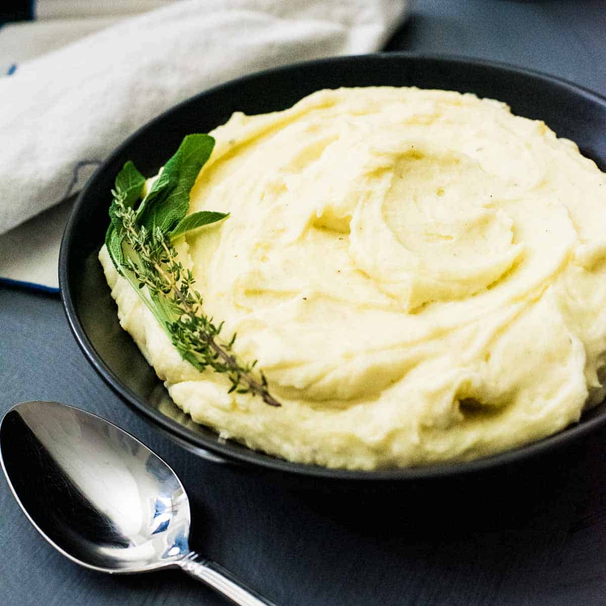

Creamy Mashed Potatoes

Description
These make-ahead mashed potatoes are rich, creamy, and smooth. You can
do nearly everything up to two days ahead — a great option to give you
a few extra hours on those big holidays. Adding butter after you reheat
them makes them taste freshly mashed.
Ingredients
- 3 pounds russet potatoes, scrubbed but unpeeled
- 1 ½ cups half-and-half
- Salt to taste
- 6 tablespoons butter, softened
Steps
- Place potatoes in a large pot and cover with salted water; bring to
a boil. Reduce heat to medium-low and simmer until tender, about 20
minutes. Drain.
- Heat half-and-half in the microwave until just warm.
- Process unpeeled potatoes through a food mill into a medium bowl.
(Or, using a potholder, peel and drop them into a bowl. Puree using
a potato masher or stand mixer fitted with the paddle attachment.)
Stir in warm half-and-half and salt (or beat, if using a mixer)
until smooth and fluffy. Cool, cover, and refrigerate potatoes in a
microwave-safe, airtight container for up to 2 days.
- Thirty minutes before serving, microwave until warm. Transfer to a
heatproof bowl set over a pan of simmering water. Stir in butter to
melt. Cover and keep warm.
Home